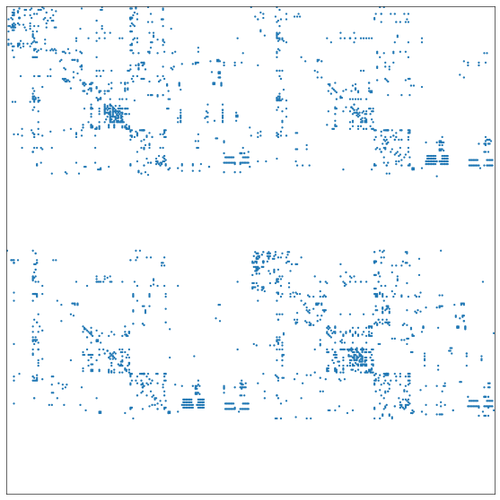
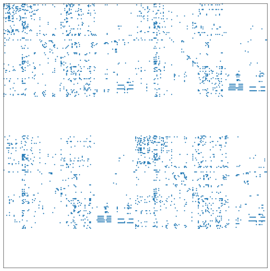

C. elegans connectomes
Contents
C. elegans connectomes#
import datetime
import time
import networkx as nx
import numpy as np
import pandas as pd
from graspologic.plot import adjplot
from pkg.data import DATA_PATH
from pkg.utils import create_node_data, ensure_connected, select_lateral_nodes
FILENAME = "process_c_elegans"
DISPLAY_FIGS = True
OUT_PATH = DATA_PATH / "processed_split"
t0 = time.time()
Load the raw adjacency matrices#
def load_adjacency(path):
adj_df = pd.read_csv(path, index_col=0).fillna(0)
node_ids = np.union1d(adj_df.index, adj_df.columns)
adj_df = adj_df.reindex(index=node_ids, columns=node_ids).fillna(0)
adj_df = pd.DataFrame(
data=adj_df.values.astype(int), index=adj_df.index, columns=adj_df.columns
)
return adj_df
Filter data#
Make sure neurons are lateralized and fully connected
for sex in ["male", "herm"]:
file_name = f"{sex}_chem_adj.csv"
raw_path = DATA_PATH / "c_elegans"
raw_path = raw_path / file_name
adj_df = load_adjacency(raw_path)
node_ids = adj_df.index
nodes = create_node_data(node_ids, exceptions=["vBWM", "dgl", "dBWM"])
# get rid of any nodes which don't have a side designation
adj_df, nodes, removed_nonlateral = select_lateral_nodes(adj_df, nodes)
# then ensure the network is fully connected
adj_df, nodes, removed_lcc = ensure_connected(adj_df, nodes)
# then remove any nodes whose partner got removed by that process
adj_df, nodes, removed_partner_lcc = select_lateral_nodes(adj_df, nodes)
# REPEAT in case this removal of partners causes disconnection
adj_df, nodes, removed_lcc2 = ensure_connected(adj_df, nodes)
adj_df, nodes, removed_partner_lcc2 = select_lateral_nodes(adj_df, nodes)
adjplot(adj_df.values, plot_type="scattermap")
g = nx.from_pandas_adjacency(adj_df, create_using=nx.DiGraph)
nx.write_edgelist(
g, OUT_PATH / f"{sex}_chem_edgelist.csv", delimiter=",", data=["weight"]
)
nodes.to_csv(OUT_PATH / f"{sex}_chem_nodes.csv")


End#
elapsed = time.time() - t0
delta = datetime.timedelta(seconds=elapsed)
print(f"Script took {delta}")
print(f"Completed at {datetime.datetime.now()}")
Script took 0:00:00.501076
Completed at 2022-05-23 10:58:33.953015